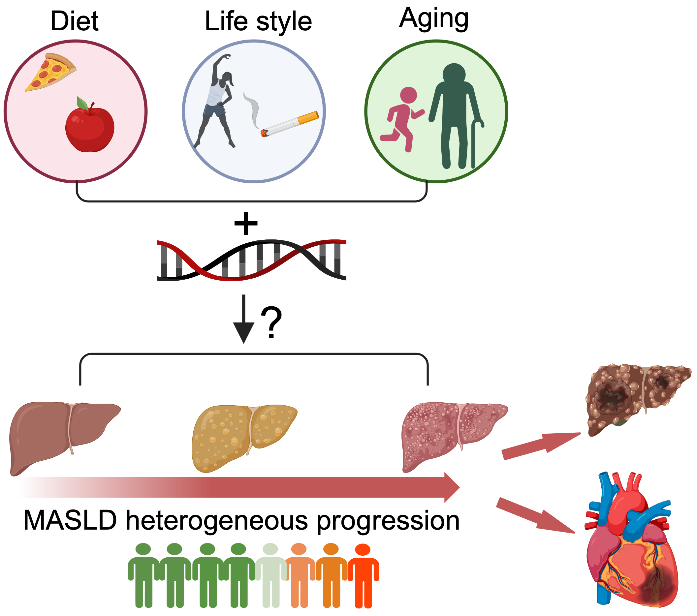
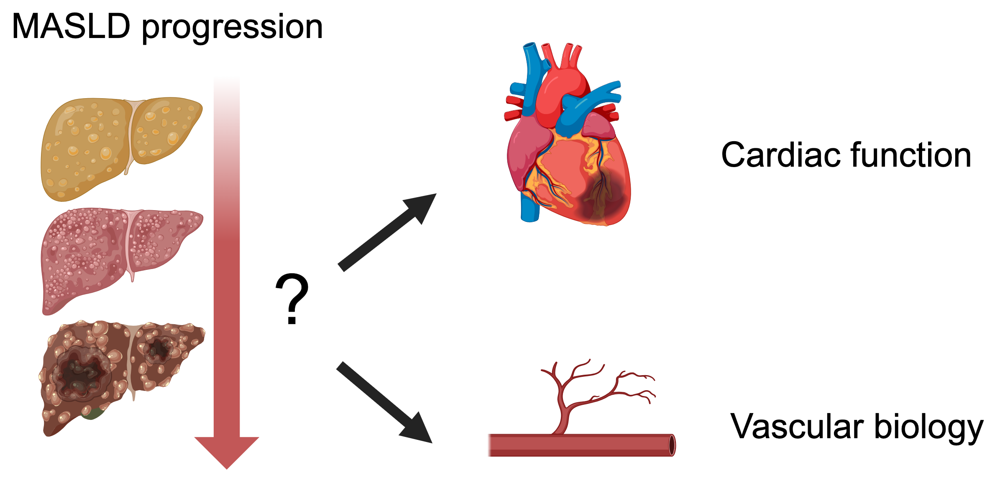

Understanding physiology
Through the lens of Gene regulation
We seek to uncover how gene-environment interactions shape the development and progression of cardiometabolic diseases through innovative experimental and computational approaches spanning physiology, cell biology, genetics, and genomics. Our goal is to transform our discoveries into strategies for the prevention, prediction, and treatment of cardiometabolic diseases.
Welcome to the
Yang Xiao Lab
Genes, environment
Communication
between organs
Adaptation to
metabolic stress
Our science
Connecting gene regulation with whole-organism physiology.
Genes, environment & cardiometabolic disease
How do genetic variations interact with environmental and physiological cues to shape the susceptibility and progression of cardiometabolic disease?

Cardiometabolic diseases are a growing global health burden. Their hepatic manifestation, metabolic dysfunction–associated steatotic liver disease (MASLD), affects nearly one-third of adults worldwide. Although early-stage MASLD is reversible, a subset of patients progresses to life-threatening conditions. Understanding what drives this heterogeneous progression remains a fundamental challenge.
Our research focuses on how genetic variations interact with environmental exposures, such as diet, and physiological stresses, including aging and inflammation, to shape the heterogeneous progression of MASLD. Our goal is to identify high-risk individuals and develop new strategies for disease prediction, prevention, and treatment.
To achieve this, we will integrate innovative approaches in spatial and single-cell functional genomics, human iPSC models, proteomics, population genetics and computational biology.
Communication between organs
How does the liver communicates with other organs in cardiometabolic disease?

Cardiometabolic disease is a systemic disorder involving complex interactions among multiple organs. The liver is not only a metabolic organ but also one of the body's major secretory organs, producing a wide range of bioactive molecules. However, how this communication is altered under cardiac and metabolic stress remains poorly understood. Our goal is to elucidate the molecular mechanisms underlying liver-organ communication, providing new insights into the pathogenesis of cardiometabolic disease and uncovering novel therapeutic strategies for cardiovascular disorders.
We will employ mouse genetics, functional genomics, AAV-mediated in vivo perturbation, and bioinformatic approaches to address this question.
Adaptation to metabolic stress
How organisms with exceptional metabolic adaptations cope with metabolic stress, and whether their solutions can be translated to improve human health?
Numerous non-canonical model organisms have developed remarkable strategies to withstand metabolic challenges. For example, naked mole-rats exhibit remarkable resistance to hypoxia; Thirteen-lined ground squirrels tolerate prolonged fasting during hibernation; Jamaican fruit bats maintain metabolic health despite chronically consuming a high-sugar diet.
Our lab is interested in deciphering the genetic and epigenetic mechanisms that underlie these naturally evolved adaptations to metabolic stress. By identifying the protective pathways employed by these organisms, we aim to harness these evolutionarily optimized solutions to prevent or treat human metabolic diseases and promote healthy aging.
People behind the science
Principal Investigator
Yang Xiao, MBBS, PhD
Assistant Professor, Department of Physiology
Medical College of Wisconsin
Dr. Xiao’s research spans cardiac biology, transcriptional regulation, and metabolic liver disease. Her lab brings together experimental and computational approaches.
Scientific contributions
Publications
* Co-first authors · # Co-corresponding authors
Liver physiology
A non-apoptotic caspase-8-meteorin pathway in hepatocytes promotes MASH fibrosis
Nature Metabolism. 2025;7(10):2067–2082.
Hepatocytes demarcated by EphB2 contribute to the progression of nonalcoholic steatohepatitis
Science Translational Medicine. 2023;15(682):eadc9653.
Nuclear receptors and transcriptional regulation in non-alcoholic fatty liver disease
Molecular Metabolism. 2021;50:101119.
The hepatocyte clock and feeding control chronophysiology of multiple liver cell types
Science. 2020;369(6509):1388–1394.
Heart physiology
RIP140 deficiency enhances cardiac fuel metabolism and protects mice from heart failure
Journal of Clinical Investigation. 2023;133(9):e162309.
Hippo pathway deletion in adult resting cardiac fibroblasts initiates a cell state transition with spontaneous and self-sustaining fibrosis
Genes & Development. 2019;33(21–22):1491–1505.
Hippo signaling plays an essential role in cell state transitions during cardiac fibroblast development
Developmental Cell. 2018;45(2):153–169.e6.
Dystrophin-glycoprotein complex sequesters Yap to inhibit cardiomyocyte proliferation
Nature. 2017;547(7662):227–231.
Genetics and epigenetics
Integrative analyses elucidate transcriptional regulatory functions of risk alleles for metabolic liver disease
Nature Genetics. 2026;58(6):1280–1294.
An intrinsically disordered region controlling condensation of a circadian clock component and rhythmic transcription in the liver
Molecular Cell. 2023;83(19):3457–3469.e7.
Individual-specific functional epigenomics reveals genetic determinants of adverse metabolic effects of glucocorticoids
Cell Metabolism. 2021;33(8):1592–1609.e7.
Connect with us
Yang Xiao Lab
Department of Physiology
Medical College of Wisconsin
HRC H4860
Continue the conversation
For research inquiries and potential collaborations, contact Yang Xiao.
Visit the MCW faculty profile